Раскрою маленький секрет, проверенный на практике, как я готовлю сочные котлеты из свинины. Они получаются невероятно нежными, с румяной корочкой снаружи и мягким, сочным мясом внутри. В рецепте я использую простые, но важные ингредиенты, которые добавляют сочности готовому блюду. Такие добавки, как кориандр и чеснок, делают котлеты очень ароматными.
| Время готовки | Количество порций | Калорийность | Сложность готовки | Рейтинг |
| 1 час | 15 | 227 ккал | Новичок | 0 отзывов |

| Свинина | Сало | Лук репчатый | Чеснок | Хлеб | Кориандр | Соль | Перец черный | Масло растительное | Вода |
| 1кг | 100г | 250г | 15г | 150г белый | 3г молотый | по вкусу | по вкусу молотый | по вкусу для жарки | 250мл |
Шаг 1.
Подготовить необходимые ингредиенты для приготовления сочных котлет из свинины. Лучше всего использовать мясо с небольшими прожилками жира, например, свиную лопатку или шею. Эти части содержат нужное количество жира и мяса, что делает котлеты мягкими и сочными. На килограмм мяса добавляю примерно 100 г сала, не важно свежее оно или соленое. Сало должно быть мягким, а не жестким.
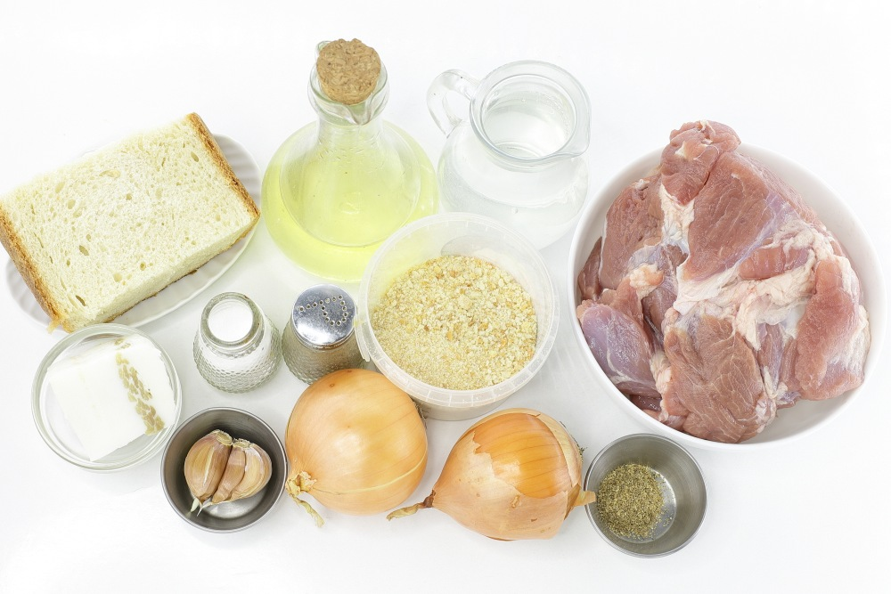
Шаг 3.
Очистить лук и чеснок. Одну луковицу (150 г) нарезать небольшими кубиками, вторую луковицу меньшего размера (100 г) разрезать на более крупные кусочки. Чеснок оставить в целом виде.
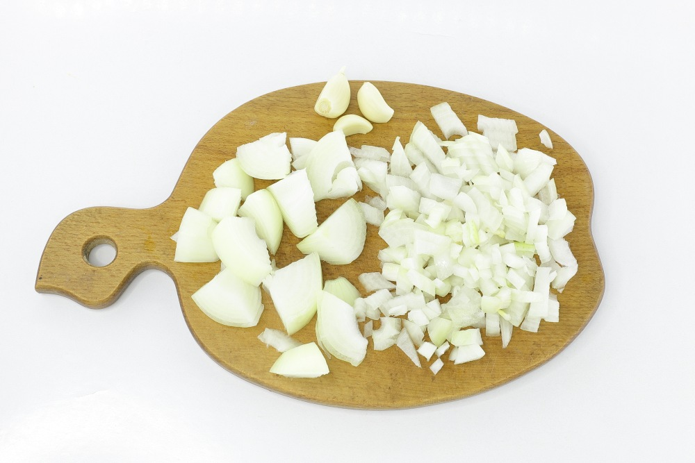
Шаг 4.
В сковороде разогреть небольшое количество масла (15-20 мл). Добавить нарезанный маленькими кубиками лук. Жарить на среднем огне до мягкости и легкого золотистого цвета, примерно, 4-5 минут. Не забывать помешивать, чтобы лучок не сгорел. Жареный лук остудить до комнатной температуры.
Когда лук обжаривается, он выделяет влагу, карамелизуется и становится мягким и сладким. В сочетании с мясом, он помогает сохранить сочность и добавляет дополнительный аромат. К тому же, жареный лук делает котлеты более нежными, так как луковые кусочки не только увлажняют мясо, но и придают ему легкую сладость, которая прекрасно контрастирует с насыщенным вкусом свинины.
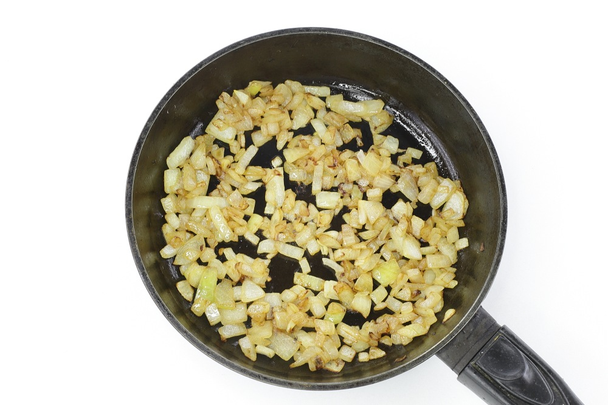
Свинину, у меня лопатка, хорошо промыть. Обсушить бумажным полотенцем от лишней влаги. Нарезать средними кусочками. Сало нарезать такими же кусочками. Шкурку предварительно удалить.
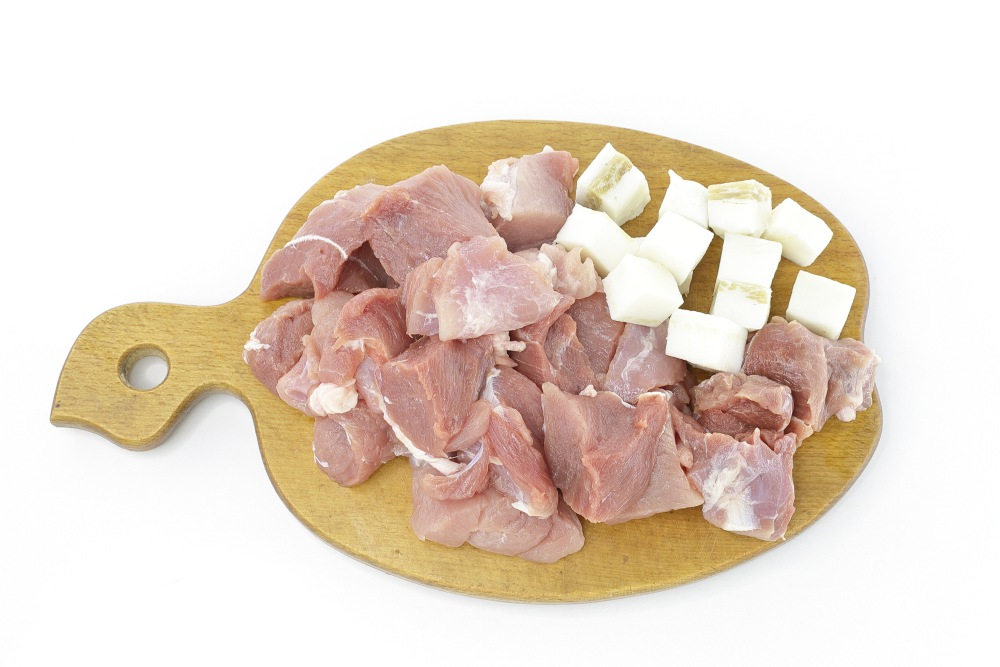
Пропустить через мясорубку свинину, сало, лук, чеснок, набухший хлеб вместе с оставшейся водичкой.
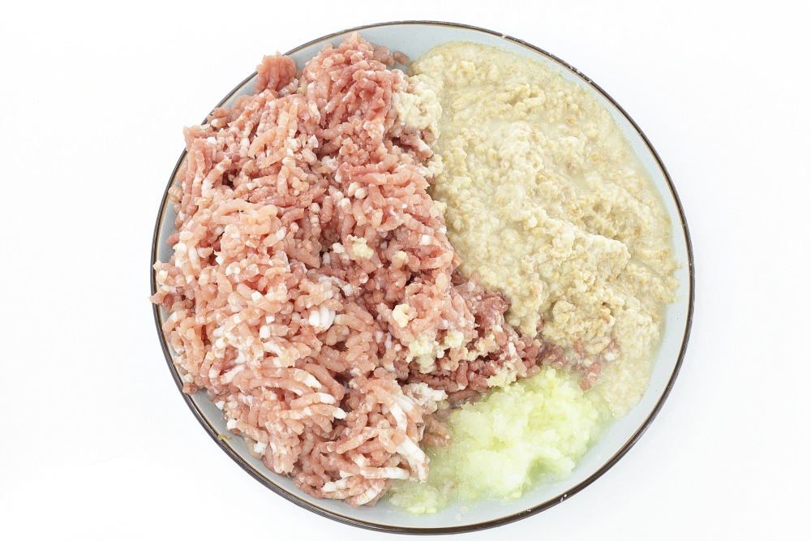
Все измельченные ингредиенты переместить в удобную глубокую посуду. Добавить к фаршу жареный лук, молотый кориандр, по вкусу соль и молотый черный перец. Дополнительно можно добавить свои любимые специи к мясу.
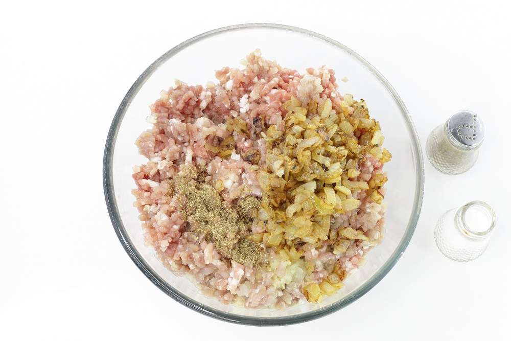
Фарш хорошо перемешать со специями и жареным луком. На этом этапе после тщательного перемешивания, рекомендую фарш отбить. Я приподнимаю фарш руками и бросаю обратно в миску, вот для чего нужно взять глубокую посуду. Процедуру отбивания повторяю 8-10 раз. Фарш становится более плотным и держится вместе. Накрыть пищевой пленкой. Оставить при комнатной температуре на 1,5-2 часа для созревания. Если держать фарш дольше, тогда нужно отправить в холодильник.
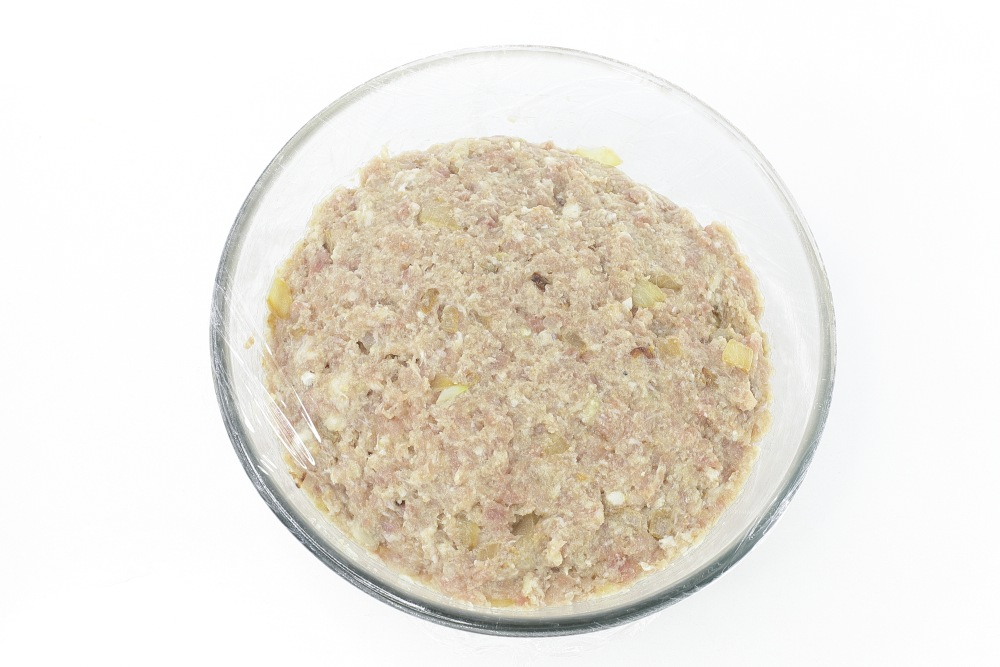
Фарш разделить на порционные кусочки. Я делаю небольшие заготовки весом 50 г каждая. При необходимости руки можно смочить небольшим количеством воды.
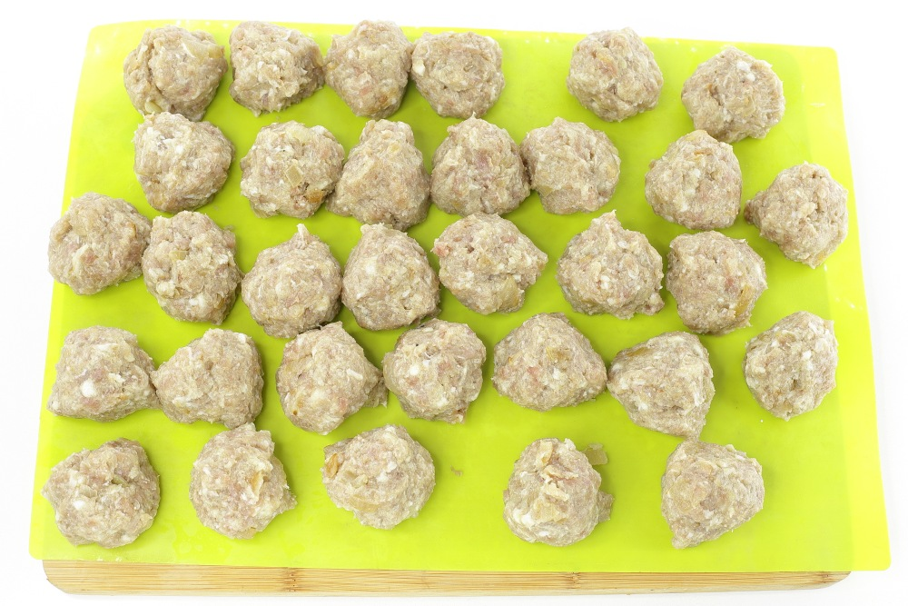
Шаг 10. Из каждого мясного кусочка сформировать заготовку желаемой формы. Опустить в миску с панировочными сухарями и обсыпать со всех сторон. Лишнюю панировку рекомендую струсить, чтобы она не горела во время жарки.
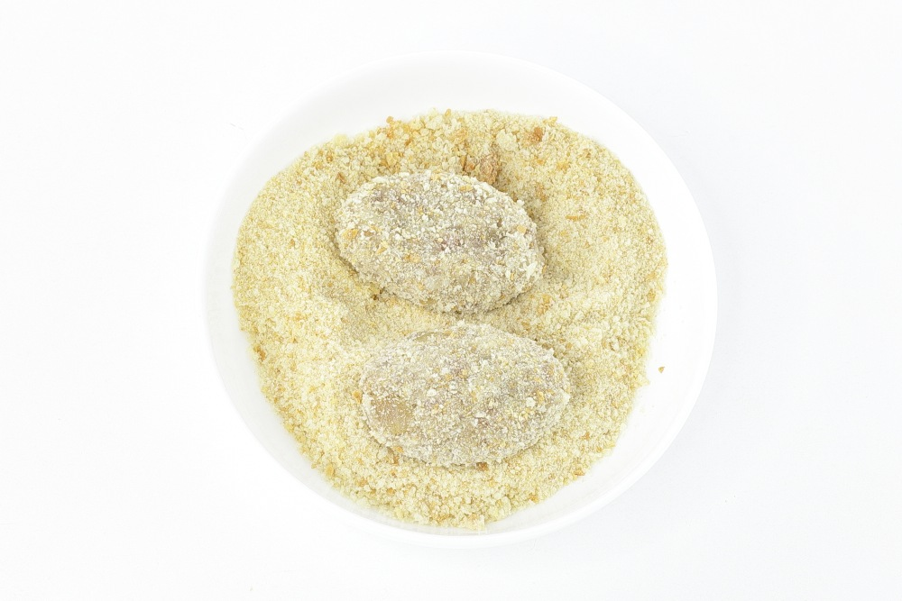
Проделать так со всеми мясными колобками. У меня получилось целых 32 котлеты из свинины.
На этом шаге полуфабрикат можно отправить в морозилку и заморозить. После заморозки расфасовать порционно в специальные пакеты для заморозки и хранить в морозилке до 3 месяцев. Перед жаркой их не нужно размораживать — можно сразу готовить из замороженных, только жарить немного дольше.
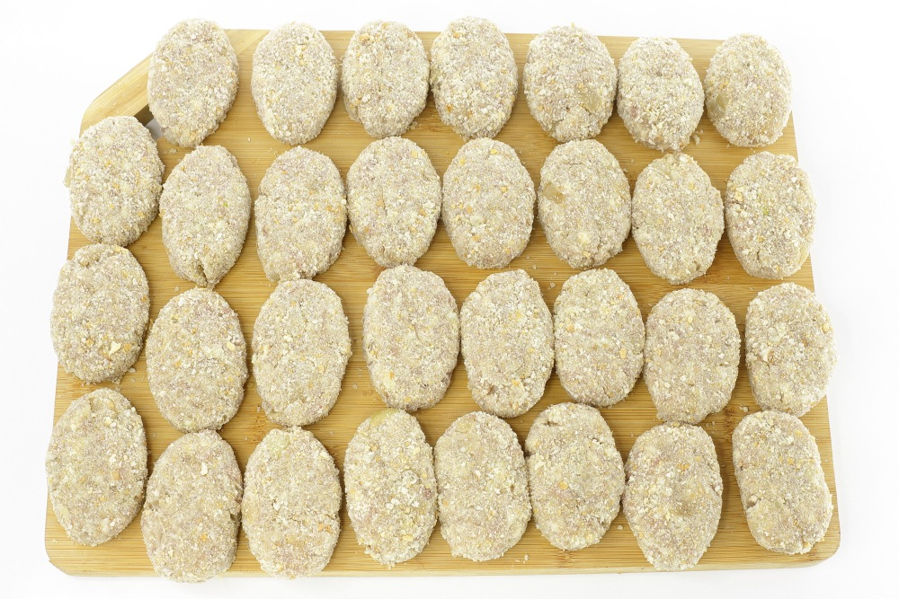
Шаг 12. Подготовить глубокую сковороду для жарки сочных котлет из свинины.
Разогреть в ней растительное масло. Выложить заготовки. Жарить котлеты из свинины на сковороде по 4-5 минут с каждой стороны на среднем огне.
Время жарки зависит от толщины заготовок и интенсивности огня. Если котлеты большие и толстые, их можно накрыть крышкой в процессе жарки, чтобы они быстрее прожарились внутри, не подгорая снаружи.
Важно не пережарить котлеты. Чтобы убедиться, что они готовы внутри, можно сделать небольшой надрез в самой толстой части. Если мясо внутри розовое, значит, котлета еще не готова. В таком случае лучше продолжить жарку, убавив огонь, чтобы мясо прогрелось равномерно.
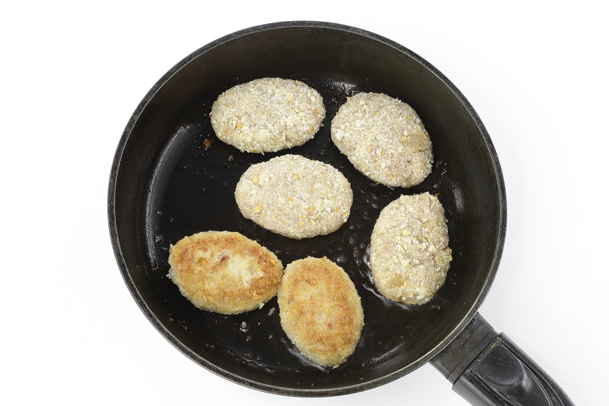
Жареные котлеты из свинины выложить на бумажное полотенце, чтобы удалить остатки масла.
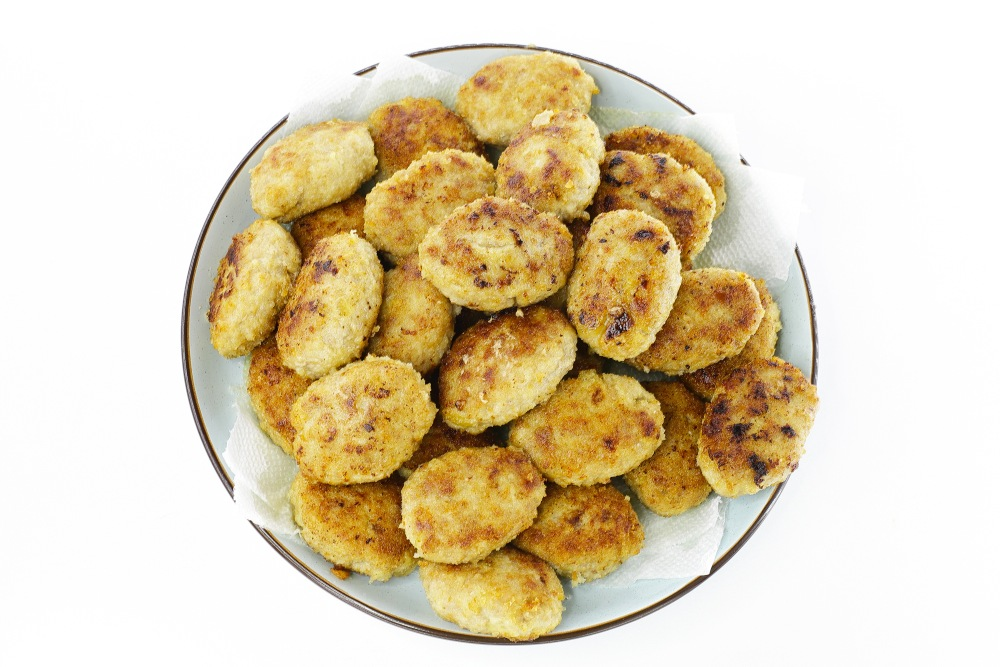
Шаг 14. Сочные котлеты из свинины готовы. Приятного аппетита!
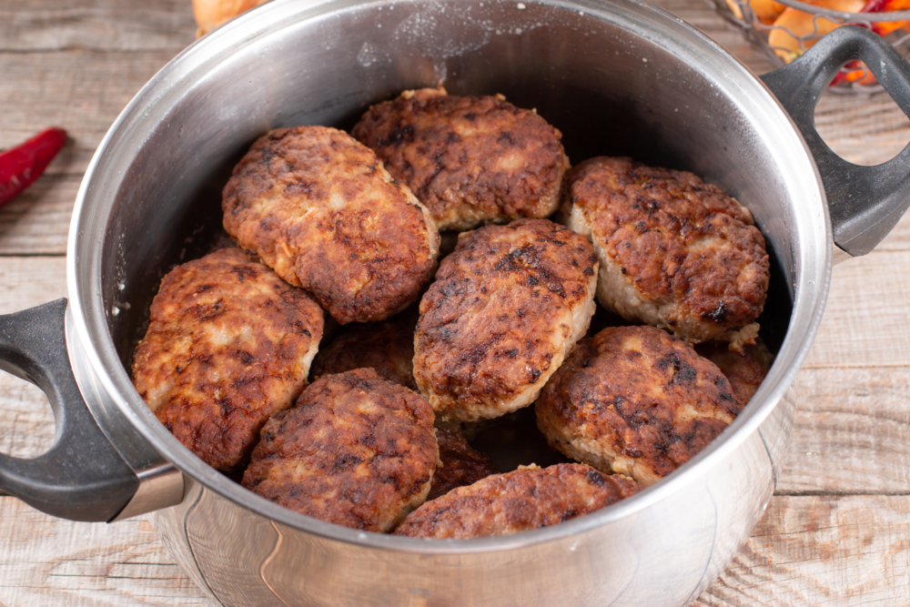
Свежеприготовленные, обжаренные или протушенные котлеты сначала нужно остудить до комнатной температуры, а затем охладить в холодильнике минимум 2-3 часа.
Охлаждение перед заморозкой необходимое условие и это можно сделать как в посуде, в которой котлеты были приготовлены, так и в контейнере или пакете, где они расфасованными будут храниться в замороженном виде.
Охлажденные котлеты переложить в контейнер или пакет, кому как удобнее. Удобно замораживать котлеты порционно, чтобы после разморозки можно было съесть их без остатка.
Закрыть контейнер крышкой, а пакет плотно завязать. Контейнер можно упаковать в дополнительный пакет, а в случае заморозки в пакете лучше использовать два для надёжности. Подписать этикетку с указанием названия блюда, вида мяса, количества порций и даты заморозки.
Отправить котлеты в морозильную камеру на хранение при температуре минус 18 градусов.
Контейнер с котлетами и гарниром тоже обязательно подписать, хорошо упаковать и отправить в морозильную камеру на хранение.
Контейнер или пакет достать из морозильной камеры и переставить в холодильник, а когда они разморозятся, нагреть любым удобным способом.
Котлеты, замороженные в пакете, нужно извлечь из него, переложить на тарелку и только потом размораживать и нагревать в микроволновке.
На холодную сковороду выложить замороженные котлеты, подлить немного воды, накрыть крышкой и на минимальном огне сначала разморозить, а далее подогреть их. Во время разморозки советую несколько раз перевернуть котлеты, чтобы они равномерно прогревались.
Срок хранения замороженных готовых котлет – 3 месяца при температуре -18 градусов.
Готовое блюдо после разморозки можно хранить в холодильнике не дольше 2 суток. Повторно замораживать готовые котлеты нельзя.
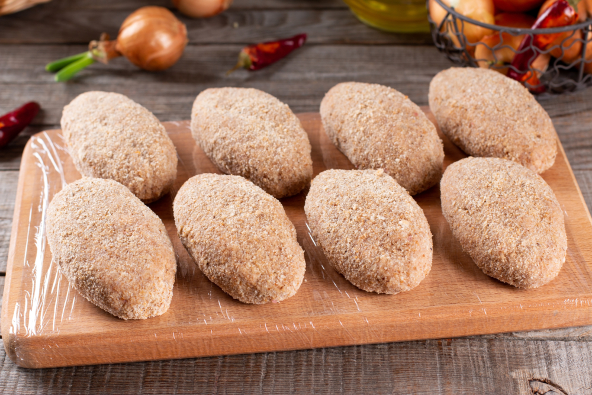
Лучше всего замораживать котлеты в панировочных сухарях. Котлетный фарш нужно сначала хорошо охладить в холодильнике, а далее влажными руками сформировать котлеты и обвалять их в сухарях. Застелить разделочную доску пищевой пленкой и выложить котлеты так, чтобы они не соприкасались друг с другом.
Отправить доску в морозильную камеру при температуре минус 18 градусов на 3-4 часа, установив её на горизонтальную поверхность. Чтобы котлеты не заветрились и меньше распространяли свой запах, их можно дополнительно накрыть пищевой плёнкой.
Далее замороженные котлеты нужно отделить от доски и расфасовать либо в пакеты, либо в контейнеры. Также котлеты можно сложить стопкой и завернуть в пищевую пленку. Обязательно подписать этикетку, указав все данные о продукте и дату заморозки.
Чтобы разморозить такие котлеты достаточно выложить их на разделочную доску или плоское блюдо, застеленные пищевой пленкой и отправить в холодильник. Панировка при разморозке может осыпаться и стать влажной, поэтому советую снова обвалять котлеты, чтобы при обжарке панировка дала хрустящую корочку.
Также можно выложить замороженные котлеты на холодную сковороду с растительным маслом, на минимальном огне начать жарить котлеты под крышкой, не переворачивая и не сдвигая их с места, так как котлеты будут выделять сок и могут прилипнуть, а когда сок испариться и котлеты чуть поджарятся их легко можно будет перевернуть и продолжить приготовление.
Еще замороженные котлеты можно готовить на пару, не размораживая их (но стоит учесть, что время приготовления таких котлет будет чуть больше обычного).
Срок хранения сырых замороженных котлет – 2 месяца при температуре -18 градусов. Повторно замораживать сырые котлеты нельзя.